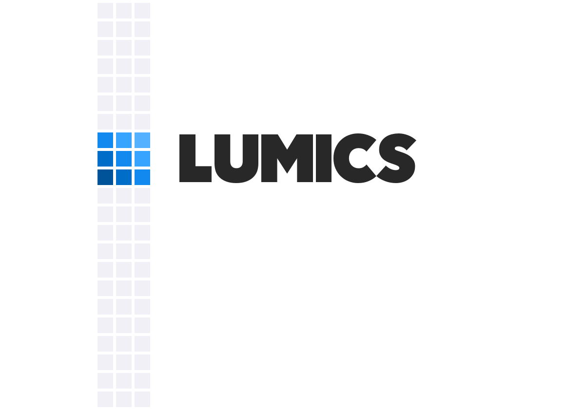
Branding for the Lumics SaaS product. Vertical box grid usage shown. Designed using Sketch and Illustrator.
Lumics Breadcrumbs Navigation
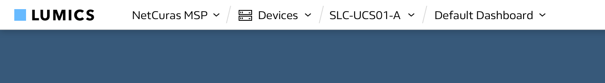
After user interviews, it was clear one of the major hurdles to using Lumics was understanding where you were within the complex hierarchy of the app. Since all users of the app were IT professionals, and understand directories, it made sense to develop a concept for a breadcrumbs menu that doubled as a navigation menu. At first glance the top bar of the app displays the hierarchy the user is currently located within. This is always visible.
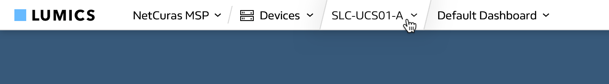
On hover over one of the breadcrumbs, the forward slashes between the directories expand and animate outward to create a button.
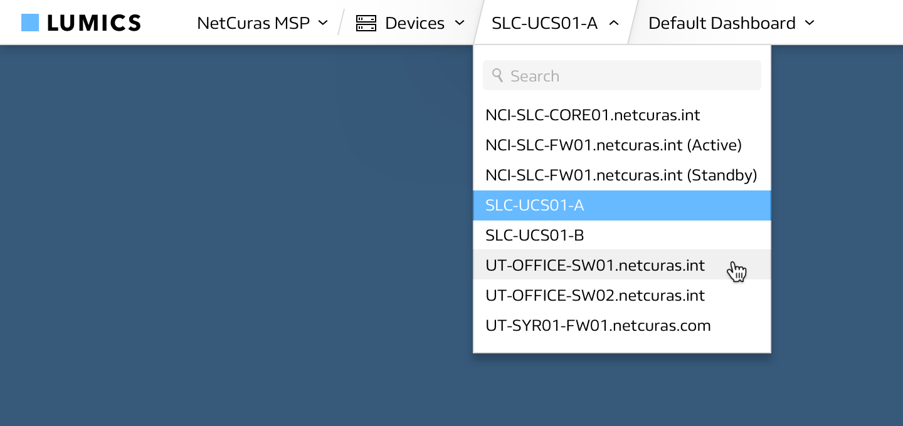
On click, a dropdown menu appears that displays the current item as well as other places to navigate within the same directory. This navigation menu was conceived of, designed, and developed using Sketch, HTML, and CSS. While the final product looked as shown, colors were changed as part of a later redesign.
Lumics App Components
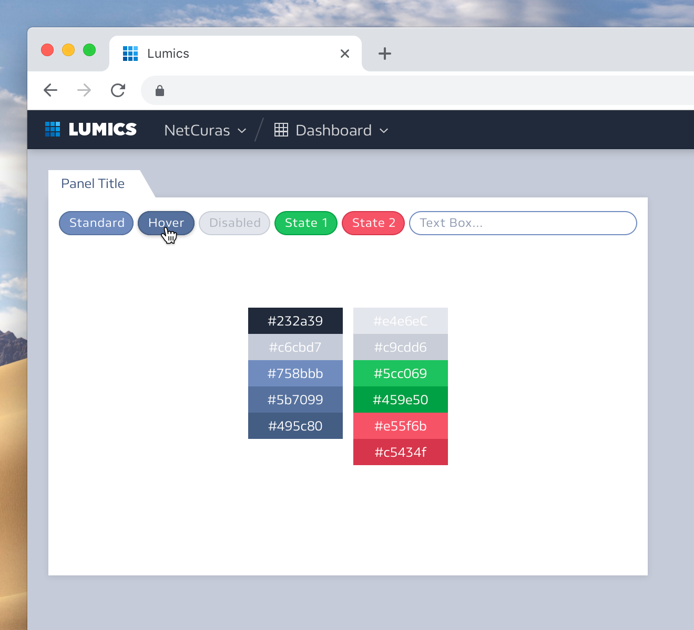
Later on in the design process colors of the Lumics app changed and reusable components were developed. Design was finalized via Sketch for certain elements that needed approval before being implemented. Components were created with HTML and CSS, applied to existing elements. These components could then later be reused by developers in the future for easy styling.
Lumics Status Icons
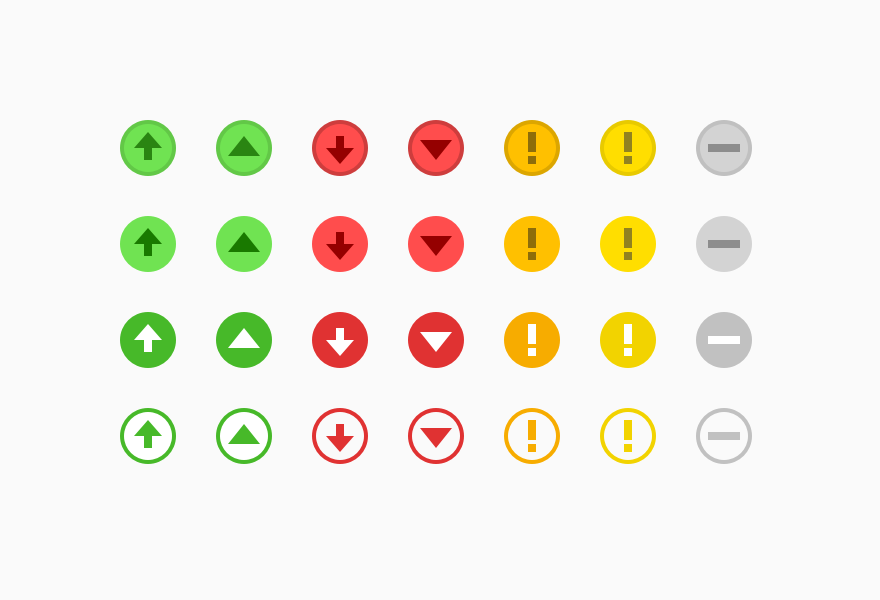
Variations of status icons designed in Sketch, then developed with HTML and CSS. It is important to be able to glance at the icon of an item and know its status immediately with no ambiguity. Shapes as well as color were used to assist colorblind users.
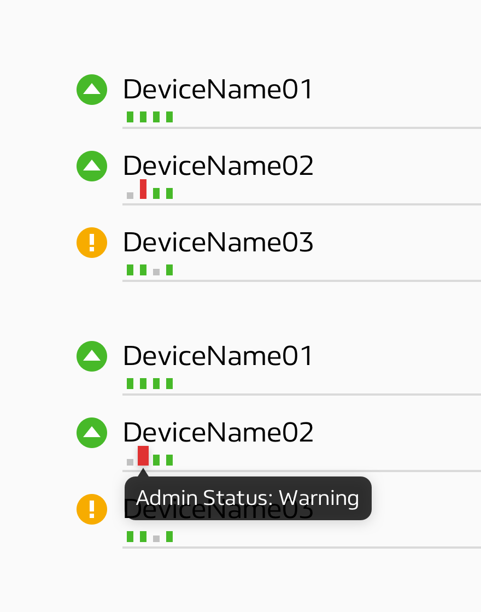
A status array concept that was never used. The idea was to display various substatuses of an item via small icons that were hoverable, so at a glance all substatuses for an item could be seen. Designed in Sketch.
Lumics Icon Set
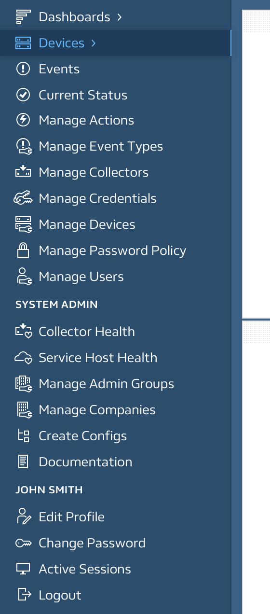
Icon set designed and developed for the Lumics app to assist users in navigation at a glance. Icons designed in Illustrator and Sketch, then added to the app as SVGs. All icons were designed to work together as a piece using line art, matching the weight of the typeface.
Lumics Grayscale Wireframe
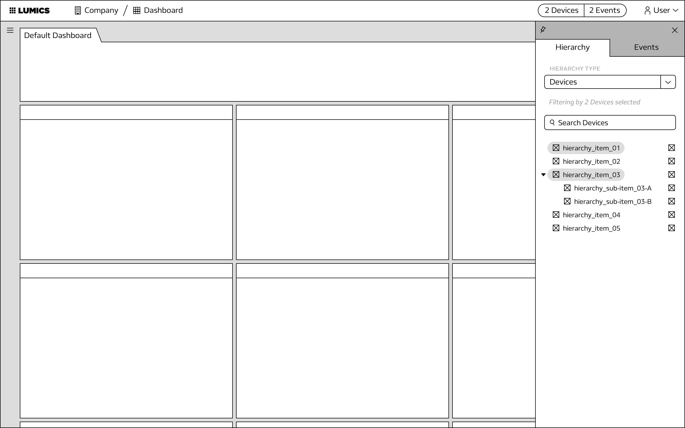
Often in the early stages of development of a component, wireframes were created in order to brainstorm possible solutions. This allowed for rapid creation of multiple solutions as well as iteration. Wireframes were created in Sketch.
NetCuras Branding Concept
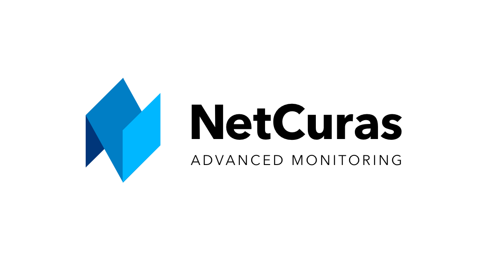
Unused branding concept for NetCuras, an IT company that uses advanced monitoring.
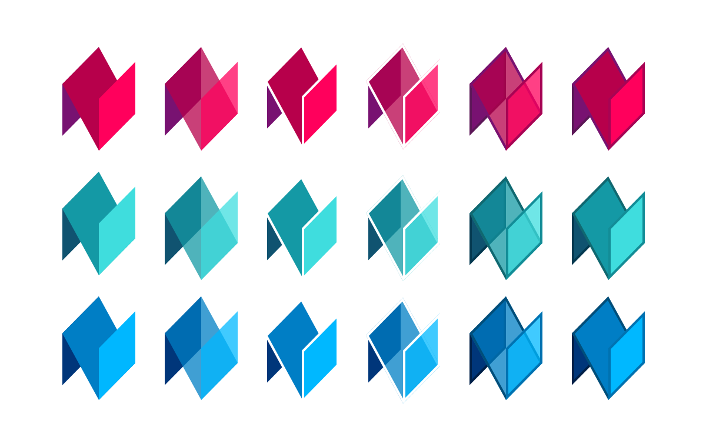
Variations of the “N” polygonal lettermark.
FutureColor Blog Concept
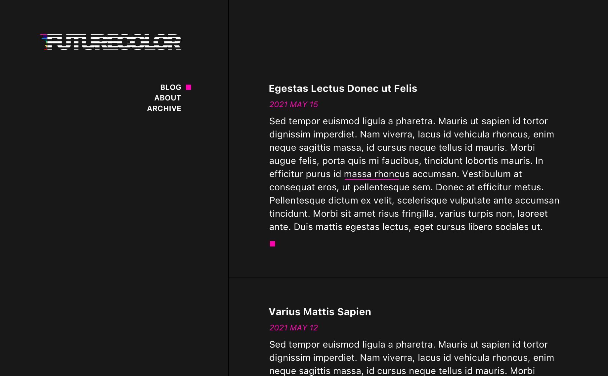
Personal blog concept and branding.
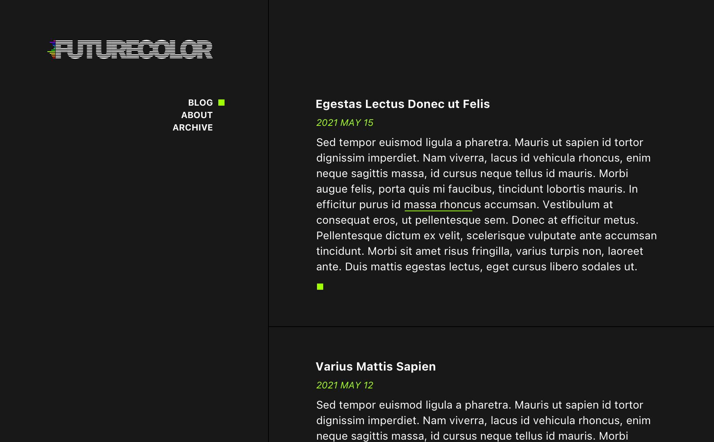
The idea is for all twelve colors of the logo spectrum to be used, but not at once. Instead, each month one of the colors would become the highlight color. This would make the site's design change on its own over time.